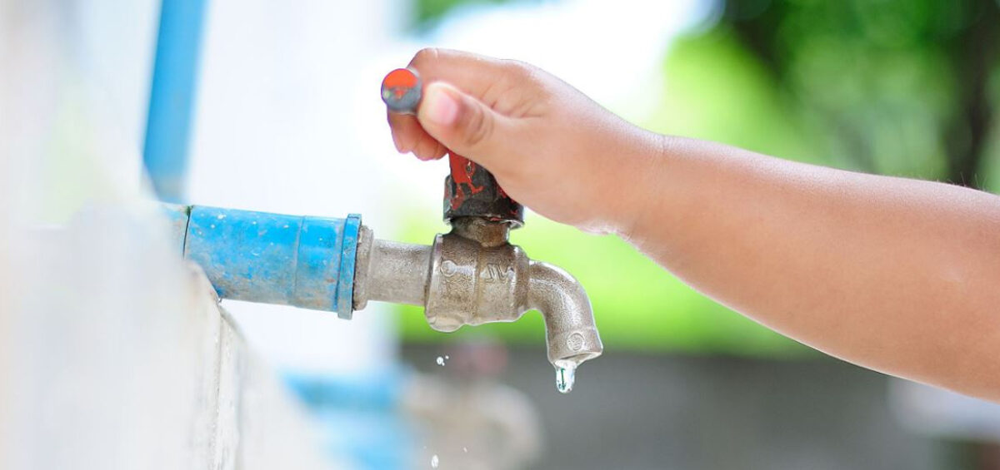

Cada acción cotidiana puede ayudar a evitar el desperdicio y la contaminación del agua.

Pequeñas acciones, gran cambio
Cuidar el agua significa usar solo la necesaria y evitar contaminarla. Cada vez que desperdiciamos agua o tiramos residuos al drenaje, se necesita más trabajo para limpiarla.
Las acciones de una sola persona parecen pequeñas, pero cuando muchas familias las realizan, ayudan a conservar este recurso.
Acciones que sí ayudan
Cuidar el agua no significa dejar de usarla; significa utilizarla con responsabilidad.
Cerrar la llave: mientras te cepillas los dientes o te enjabonas las manos.
Reparar fugas: una llave que gotea desperdicia agua todos los días.
Reutilizar agua: por ejemplo, usar el agua de lavar frutas para regar plantas.
No contaminar: no tirar basura, aceite o productos químicos en coladeras, ríos o calles.